今天我們會介紹並實作一個可以讓使用者不需自己支付 Gas Fee 的機制，也就是 Meta Transaction，可以用來提升一般用戶的使用體驗，做為 Web3 與進階前端的收尾。
在發送任何以太坊上的交易時，都必需要有原生代幣（也就是 ETH）作為 Gas Fee 才能發送。但這也對使用者形成了一個門檻，想像一個場景是我跟別人買了一些 USDT 請他打到我的 ETH 錢包，這時我如果想把這些 USDT 轉走或是換成其他的幣就會無法送出交易，因為我還需要買一些 ETH 作為 Gas Fee。而今天要介紹的 Meta Transaction 就是想解決這個問題，來做到使用者不需要有 ETH 也能發送交易。
類似的場景也有很多，像有很多透過 NFT 做行銷的活動會希望讓使用者連接錢包後來領 NFT，但又不希望強制使用者要先買好 ETH (on Ethereum) 或 MATIC (on Polygon)，否則會造成許多用戶流失。
如果使用者想發交易卻又不想付手續費的話，有什麼可能的作法呢？一個想法是那使用者 A 只要簽名好一個「他想發 xxx 交易」的訊息就好（也就是他的「意圖」, intent），並把這個訊息交由另一個地址 B 發送交易，並透過智能合約的邏輯模擬出就像是 A 親自發出這筆交易一樣的效果，這樣就是一種 Meta Transaction 的作法了。
一個實作 Meta Transaction 的方法是 ERC-2771 標準，裡面定義了如何將交易訊息打包並簽名、如何在鏈上驗證、合約中如何以簽名者的身份執行邏輯等等。以下是官方文件中的圖：
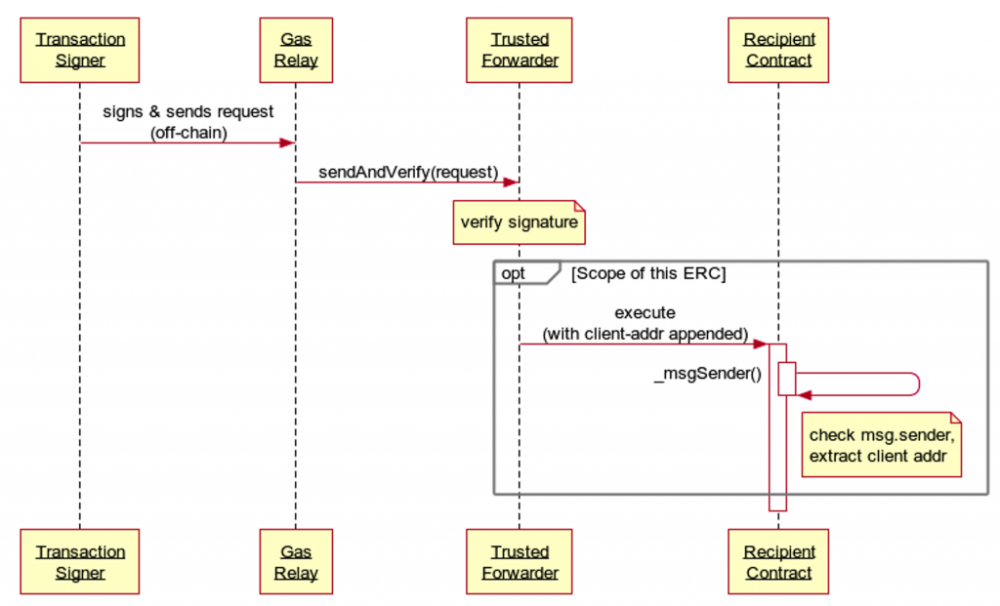
可以看到這裡面有幾個角色
以下舉一個實際的例子應該會更好懂。NFT Worlds
是一個元宇宙項目，他們發行了自己的代幣 WRLD Token，對應在 Polygon
鏈上的智能合約在這裡，切換到程式碼可以看到他實作的
ERC2771Context 這個 interface
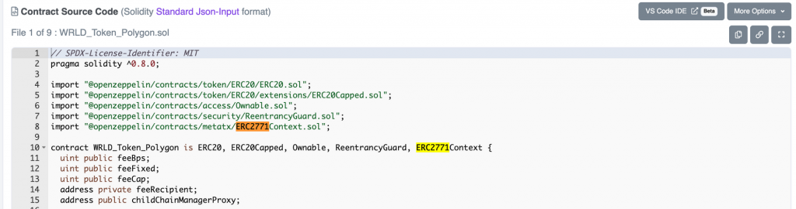
這個合約就對應到上面的 Recipient Contract，代表 NFT Worlds 的項目方希望當用戶想轉移 WRLD Token 時，允許他們不需花自己的 gas fee。至於 Trusted Forwarder 合約則是在這裡
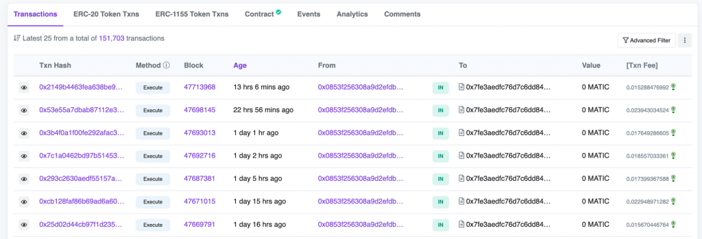
看一下這個合約相關的交易歷史，可以發現全部都是
0x0853f256308a9d2efdb18f5ab9d6ce0cd4a622b4 這個地址在呼叫
Trusted Forwarder 合約的 Execute
方法，到這裡就可以發現這個地址其實是 Gas
Relay，因為他負責把交易打上鏈並支付 Gas
Fee。那這些交易是如何運作的？可以點擊其中一筆交易進去看：
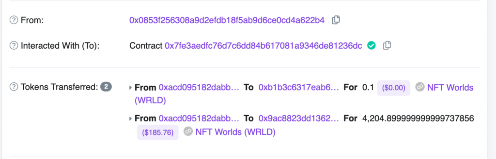
雖然是 0x0853 發出的交易，但裡面的 Token Transfer 卻是從 0xacd0 這個地址轉出的，而再往下到 Input Data 區塊中點擊 Decode Input Data 可以看到這筆交易的 call data：
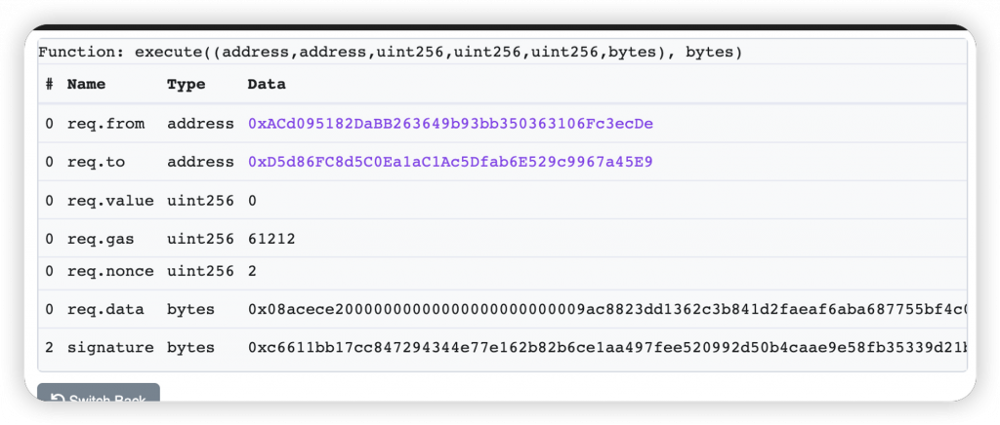
裡面的 from 地址就跟轉出 Token 的地址一致，代表 0xacd0 其實是這筆交易的 Transaction Signer，他做的操作是轉出他的 Token，只是請 0x0853 作為 Relayer 幫他支付 Gas Fee。
至於這位 Transaction Signer 實際想做什麼交易，只要看
req.data 的內容就會知道他想發給 Recipient Contract 的 call
data 實際上是什麼：
[code] 0x08acece20000000000000000000000009ac8823dd1362c3b841d2faeaf6aba687755bf4c0000000000000000000000000000000000000000000000e3f41904f485900000
[/code]
這是一個被 encode ABI 函式 encode 過的字串，要知道他其實是什麼 function 可以使用前幾天提到的 Openchain ABI Tools：
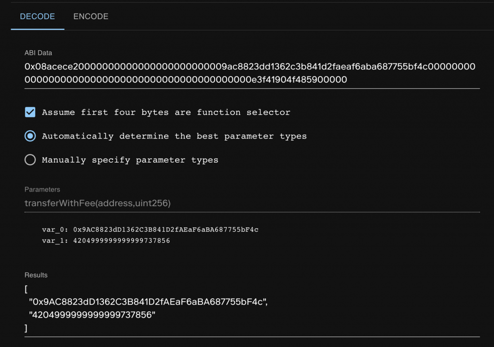
解析結果是 transferWithFee()
function，看他的宣告可以猜到兩個參數分別是要轉去的地址跟數量（0x9ac8
也跟上面圖中收到 Token
的地址一致），於是到這裡我們就完全看懂這筆交易了！總結一下這筆交易中
ERC-2771 各個角色對應到的地址：
transferWithFee
function
從實際發送出的交易已經看出整個 ERC-2771
的運作機制了，接下來就要進到合約中看 Trusted Forwarder 跟 Recipient
Contract 是如何實作的，這樣我們才能把 ERC-2771
的標準整合進自己的合約中。可以先從 OpenZeppelin
的文件來看 ERC-2771 相關的合約支援哪些方法，裡面定義了 Recipient
Contract 需實作的 ERC2771Context 介面：
[code] constructor(address trustedForwarder) isTrustedForwarder(address forwarder) → bool _msgSender() → address sender _msgData() → bytes
[/code]
以及 Trusted Forwarder 需實作的 MinimalForwarder
介面：
[code] constructor() getNonce(address from) → uint256 verify(struct MinimalForwarder.ForwardRequest req, bytes signature) → bool execute(struct MinimalForwarder.ForwardRequest req, bytes signature) → bool, bytes
[/code]
先從整筆交易的進入點 execute() 看起，參數裡有個
MinimalForwarder.ForwardRequest 結構，如果進到原始碼裡面看的話可以找到他的定義：
[code] struct ForwardRequest { address from; address to; uint256 value; uint256 gas; uint256 nonce; bytes data; }
[/code]
這跟剛才在 Polygonscan 上查看的交易資料結構一致，就是代表 Transaction Signer 希望對這個合約執行的操作，值得注意的是只需要傳入 gas 代表 gas limit 即可，不需傳入 gas price（因為 gas price 是 Gas Relay 發交易時決定的）。來看一下他的實作：
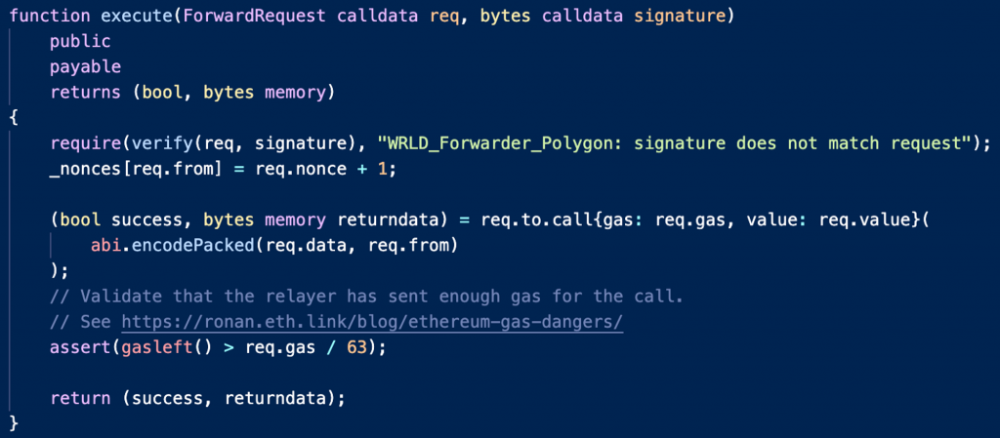
簡單來說他做了一些檢查後，使用 .call() 去呼叫 Recipient
Contract。前面的檢查用到了 verify function：
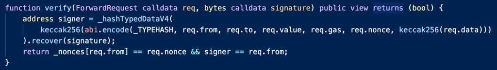
可以看到 verify 先驗證這個 Signature 是否真的是
req.from 地址去簽名 Transaction Request 得到的值，而因為
Transaction Signer 簽的是 Typed
Message（交易意圖有固定的欄位所以是結構化的資料），在鏈上也要用驗證 Sign
Typed Message 的方法。
接下來比較有趣的是 nonce 的驗證， _nonces 是一個用來記錄
req.from 地址已經透過這個 Forwarder Contract
轉發多少交易的數量，類似每個 EVM 地址都有的 nonce 用來避免 Replay
Attack，這裡需要 nonce 也是一樣的原因：不希望同樣一個 signature
可以被別人重複使用第二次，所以當 verify 驗證通過後會把
_nonces[req.from] 加一，來讓下一個有效的 signature
一定跟上過去用過的 signature 不同。因此 ForwardRequest 內的
nonce 值並不是該 req.from 地址本身的
nonce，而是 Forwarder Contract 自己紀錄的值。
最後在呼叫 Recipient Contract 時，會把 req.data 跟
req.from 連接起來，而這就對應到 Recipient Contract
中必須實作的 ERC2771Context：
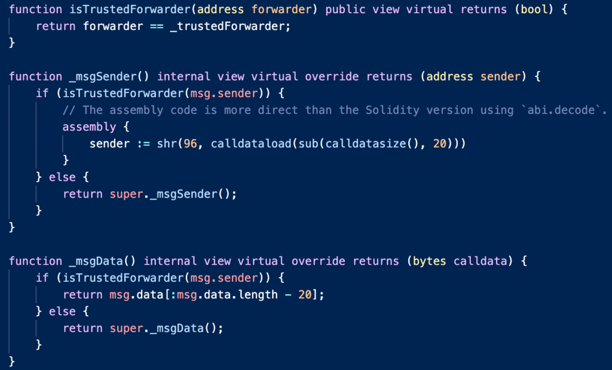
當 Recipient Contract
想要知道現在是誰呼叫自己時，他必須判斷這筆交易是否為 Meta
Transaction，如果是的話這筆交易的所有邏輯就必須針對 Transaction Signer
發生，否則就是對原始發送這筆交易的人（msg.sender）發生。至於當是
Meta Transaction 的情況要如何知道 Transaction Signer 是誰，剛才在
.call 時拼接在最後面的 req.from
資料就派上用場了，可以從 call data 中去抓最後 20 bytes 得到。
因此透過 _msgSender() function
把以上邏輯包起來，並在所有其他 function
中如果想知道當下是誰呼叫這個合約時都使用它，就能完成符合 ERC-2771
標準的合約實作。例如前面看到的 transferWithFee 長這樣：
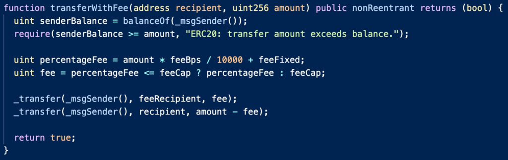
當要轉移代幣時，如果誤用了 msg.sender
，以前面的例子他就會把 0x0853 (Gas Relay)
地址的代幣轉走，但其實要轉走的應該是 0xacd0 (Transaction Signer)
的代幣才對。於是到這裡就把 ERC-2771 的實作介紹完了！
當符合 ERC-2771 的智能合約被開發完後，若要把完整的流程串起來，還差兩個步驟：
由於後續的內容才會講到後端如何發送帶有 call data 的交易，今天先提供前端的實作方式。本質上要發送 ERC-2771 Transaction 需要兩個資訊：ForwardRequest 跟 Signature。也就是前端必須算好以下資料：
from, to, value,
gas, data: 對合約進行操作的相關資料
nonce: Forwarder Contract 上該地址的 noncesignature: 把上面這些資料組成 Typed Message
後讓用戶簽名後的資料同樣以用戶想呼叫 NFT Worlds 合約中的
transferWithFee(address,uint256) function
為例，具體實作方式為：
from, to, value,
gas 都可以設成固定的值
data 要用 viem 中的
encodeFunctionData 來基於 ABI 去組nonce 要用 useContractRead 來到 Forwarder
Contract 查最新的值signature 要用 useSignTypedData
來讓使用者簽名前面先定義好 Forwarder Contract 跟 Recipient Contract 的地址跟 ABI 後，就可以把這些資料組出來了：
[code] // read forwarder nonce const { data: forwarderNonce } = useContractRead({ address: FORWARDER_CONTRACT_ADDRESS, abi: forwarderABI, functionName: “getNonce”, args: [address || NULL_ADDRESS], chainId: 137, });
// encode transferWithFee function data
const gas = 100000n;
const data = encodeFunctionData({
abi: recipientContractABI,
functionName: "transferWithFee",
args: ["0xE2Dc3214f7096a94077E71A3E218243E289F1067", 10000n],
});
// compose and sign typed data
const {
data: signature,
isError,
error,
signTypedData,
} = useSignTypedData({
domain: {
name: "WRLD_Forwarder_Polygon",
version: "1.0.0",
chainId: 137,
verifyingContract: FORWARDER_CONTRACT_ADDRESS,
} as const,
primaryType: "ForwardRequest",
types: {
ForwardRequest: [
{ name: "from", type: "address" },
{ name: "to", type: "address" },
{ name: "value", type: "uint256" },
{ name: "gas", type: "uint256" },
{ name: "nonce", type: "uint256" },
{ name: "data", type: "bytes" },
],
},
message: {
from: address || NULL_ADDRESS,
to: TOKEN_CONTRACT_ADDRESS,
value: 0n,
gas,
nonce: forwarderNonce || 0n,
data,
},
});
// in returned component
<button
onClick={() => {
if (forwarderNonce !== undefined) {
signTypedData();
}
}}
>
Sign Meta Transaction
</button>
<div>Forwarder Nonce: {(forwarderNonce || 0n).toLocaleString()}</div>
<div>Signature: {signature}</div>
{isError && <div>Error: {error?.message}</div>}[/code]
其中傳入 useSignTypedData 的是標準的 EIP-712
格式，他定義了如何在鏈上驗證 Typed Message 的標準，其中所需要的
name 跟 version 就會對應到 Forwarder Contract
上所記錄的自己的 name & version。點擊 Sign Meta Transaction
後就可以看到 Metamask 跳出的簽名 Typed Message 的視窗：
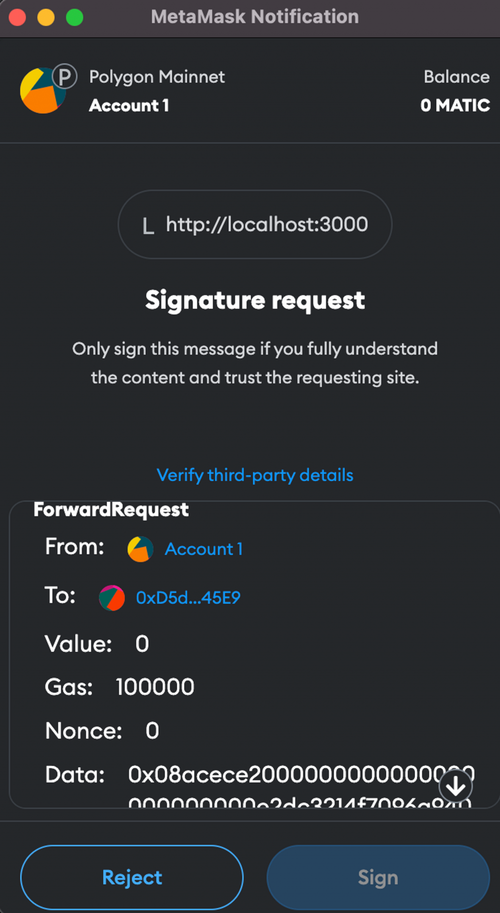
至於要如何驗證簽出來的簽章在鏈上可以被驗證通過呢？其實可以直接呼叫
Forwarder 中的 verify function，只要他回傳
true 就代表驗證成功，並顯示在畫面上：
[code] // verify typed data const { data: isVerified } = useContractRead({ address: FORWARDER_CONTRACT_ADDRESS, abi: forwarderABI, functionName: “verify”, args: [ { from: address || NULL_ADDRESS, to: TOKEN_CONTRACT_ADDRESS, value: 0n, gas, nonce: forwarderNonce || 0n, data, }, signature || “0x”, ], chainId: 137, enabled: !!address && !!forwarderNonce && !!signature, });
// in returned component
{isVerified && <div>Signature verified!</div>}[/code]
最後看到 Signature verified 代表我們的簽章可以通過 Forwarder Contract 的驗證了！
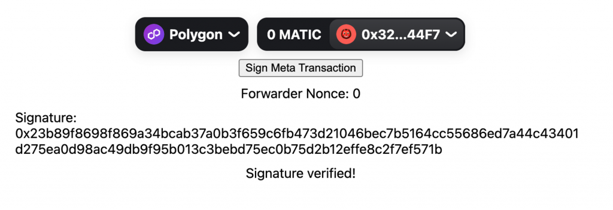
今天我們詳細講解了 ERC-2771 的機制，包含發送交易的過程、智能合約的邏輯、前端簽名 Typed Data 的串接，完整程式碼在這裡。其實 ERC-2771 只是其中一種實作 Meta Transaction 的方式，其他還有像 Ethereum Gas Station Network 也可以發送 Gasless Transaction。以及在最近正式通過的 ERC-4337 帳戶抽象化標準也是想解決 Gas Fee 支付的問題，這個會在後續的內容介紹到。
今天就是 Web3 與進階前端主題的最後一篇，接下來會進入 Web3 與進階後端，明天就會從今天也有提到的「從後端發送帶有 call data 的交易」開始介紹，讓讀者有能力實作完整 Meta Transaction 的流程。